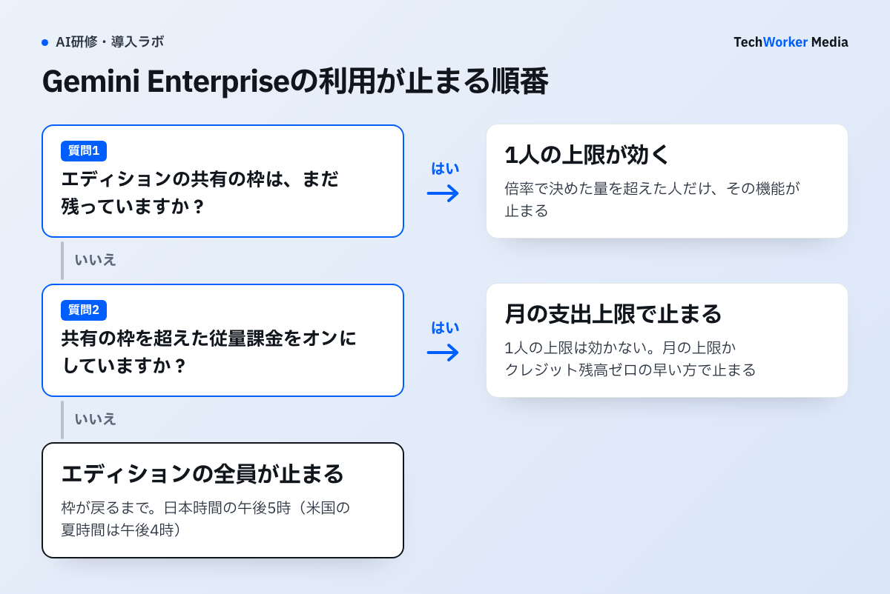
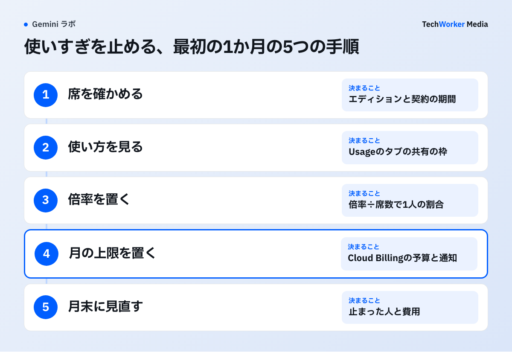

Gemini Enterpriseでは、2026年10月22日から1人あたりの利用の上限（single-user quota limit）を置けるようになりました。
- 1人あたりの上限：エディションの共有の枠を1人が使い切らないよう、「1人分の枠×倍率」で抑えます。既定の倍率は10です。
- 月の支出上限：共有の枠を超えた分を従量課金で払うときは、Cloud Billingの予算で月の上限を置きます。
- プリペイドのクレジット：11月5日から、オンラインで申し込んだ請求アカウントは前払いのクレジットで払えます。残高がゼロになると止まります。
注意したいのは、共有の枠が尽きて従量課金に入ると1人あたりの上限が効かなくなる点です。Googleの公式ドキュメント（2026年11月19日確認）をもとに、止まる順番、倍率の決め方、稟議に書くことをまとめます。
Gemini Enterpriseの1人あたりの上限とは、何ですか？
エディションの共有の利用枠を、1人が使い切らないための上限です。2026年10月22日に一般提供になり、対象はStandard、Plus、Standard Emerging Marketです。
Googleは2026年10月22日のリリースノートで、この機能の目的を次のように書いています。
原文“Gemini Enterprise administrators can configure single-user quota limits on the Usage & Spending > Usage page in the Google Cloud console to prevent an individual user from using all of an edition's shared subscription quota pool.”
日本語訳Gemini Enterpriseの管理者は、Google CloudコンソールのUsage & Spending ＞ Usageのページで、1人あたりの上限を設定できます。1人がエディションの共有の利用枠をすべて使ってしまうのを防ぐためです。
Gemini Enterpriseの利用枠は、席ごとに配られるのではありません。同じプロジェクト・場所・エディションの全員で1つの枠を共有します。席が増えると、枠も増えます。
たとえばStandardは1席あたり、アシスタントへの質問が1日160回、画像の生成が1日5枚です。100席なら、全員で1日16,000回と500枚を分け合います。
既定では1人あたりの上限はありません。よく使う1人が朝のうちに枠の大半を使うと、ほかの人がその日使えなくなることがあります。それを防ぐのがこの設定です。
11月13日には、StandardとPlusで、Google AntigravityなどのAI developer tools（開発者向けの道具）にも同じ上限がかかるようになりました。こちらは週の枠に倍率がかかります。
上限は、どの順番で効きますか？
1人の上限、エディションの共有の枠、月の支出上限の順に効きます。従量課金をオンにしていると、共有の枠が尽きた後は1人の上限が効かなくなります。

| 状態 | 何が起きるか |
|---|---|
| 1人が上限に達し、共有の枠は残っている | その人だけ、その機能が枠の戻る時まで止まる（従量課金がオンなら、共有の枠が尽きるまで）。ほかの機能とほかの人は使える |
| 共有の枠が尽き、従量課金がオフ | そのエディションの全員が、その機能を枠の戻る時まで使えない |
| 共有の枠が尽き、従量課金がオン | 1人の上限は効かなくなる。全員が従量課金で使い続け、月の支出上限で止まる |
| 月の支出上限に達するか、クレジットが尽きる | 早い方で止まる。翌月か上限の変更、クレジットの追加で戻る |
出典：Google Cloud「Quotas and pay-as-you-go usage」「Manage costs overview」（2026年11月19日確認）
3つ目の行が見落としやすい所です。公式ドキュメントは次のように書いています。
原文“If Pay-as-you-go usage above quota is enabled for the edition, the single-user quota limit no longer restricts usage.”
日本語訳エディションで共有の枠を超えた従量課金をオンにしている場合、1人あたりの上限は利用を制限しなくなります。
1人あたりの上限は共有の枠を分け合うための設定です。費用の上限を決めるのは、月の支出上限とクレジットの残高です。2つは役割を分けて設定します。
月の支出上限に達したときと、従量課金がオフで共有の枠が尽きたときは、利用者のアプリに「Usage limit reached」と出ます。1人あたりの上限に達したときの表示は、公式ドキュメントに書かれていません。Gemini Enterpriseのアプリは、枠に達したときも従量課金が始まったときも、管理者にメールを送りません。気づく手段は後で述べるCloud Billingの予算の通知です。
エディションごとの席の料金はGeminiの法人契約と料金にまとめています。Geminiを含む主要4社の料金比較表と、稟議書・社内利用ルールの雛形は、下の枠から受け取れます。
倍率は、いくつにすればよいですか？
1人が使える割合は「倍率÷席数」です。既定の10のままだと、席が少ない会社ほど1人が枠の大きな割合を使えます。
上限は「エディションの1人分の枠×倍率」で決まります。公式の例では、Standardが100席で倍率を5にすると、1人あたりアシスタントへの質問は1日800回、画像は1日25枚までです。
ここからはTechWorkerの計算です。共有の枠は「1人分の枠×席数」なので、1人が使える割合は倍率を席数で割った値になります。
| Standardの席数 | 共有の枠（質問・1日） | 倍率10（既定） | 倍率5 |
|---|---|---|---|
| 20席 | 3,200回 | 1人1,600回＝枠の50% | 1人800回＝枠の25% |
| 100席 | 16,000回 | 1人1,600回＝枠の10% | 1人800回＝枠の5% |
| 500席 | 80,000回 | 1人1,600回＝枠の2% | 1人800回＝枠の1% |
1人分の枠（Standardは質問160回・1日）は Google Cloud「Quotas and pay-as-you-go usage」（2026年11月19日確認）。割合はTechWorkerの計算
20席で既定の10のままだと、2人で共有の枠を使い切れます。席が少ない会社は、倍率を下げることを考えます。「1人に使わせてよい割合×席数」が倍率の目安です。20席で1人を枠の1割までにするなら、倍率は2になります。
倍率には決まりが3つあります。
- エディションと場所ごとに1つで、人ごとには変えられません。
- アシスタントへの質問、エージェントの作成、画像・動画の生成、Deep Researchに同じ倍率がかかります。数えるのは機能ごとです。
- 枠はAI developer tools以外は米国太平洋時間の0時に戻ります。日本時間では午後5時（米国の夏時間の間は午後4時）です。
よく使う人だけ上限を高くすることはできません。その人を別のエディション（たとえばPlus）にすると、そのエディションの別の枠と倍率が使われます。Plusは1席あたり質問が1日200回です。
1人あたりの上限は、どこで設定しますか？
Google CloudコンソールのGemini Enterprise ＞ Usage & spend ＞ Usageで、場所とエディションを選んで設定します。Gemini Enterpriseの管理者の役割が要ります。
リリースノートでは画面の名前が「Usage & Spending」ですが、操作の手順のページでは「Usage & spend」です。
- Google Cloudコンソールで、Gemini Enterpriseの「Usage & spend」を開き、「Usage」タブを選びます。
- 場所（location）を選び、エディション（ティア）を選びます。
- 「Limit any single-user's quota」を開き、StatusをEnabledにします。
- Multiplier（倍率）に1以上の整数を入れ、「Save changes」を押します。
同じページで、共有の枠の使った量と割合を機能ごとに見られます。表示に必要な権限が足りないと、使った量が0と出たり、上限がUnknownと出たりします。0と出たら、まず権限を確かめます。
Businessエディションはbusiness.gemini.googleのWebで使うサービスです。Google Cloudのコンソールを使わないため、この設定の対象にも挙がっていません。部署の利用量を細かく抑えたい会社は、Standard以上を前提に比べます。
従量課金の月の上限は、どう置きますか？
共有の枠を超えた分を払う設定（従量課金）をオンにするなら、Cloud Billingの予算で月の支出上限を置きます。上限を置かずにオンにすると、超えた分に制限がかかりません。
従量課金はUsageのページの「Pay-as-you-go usage above quota」でエディションごとにオンにします。オンにできるのは、無料試用でない有効な契約が1つ以上あるプロジェクトです。オンラインで申し込んだ請求アカウントで初めてオンにするときは、請求アカウントの管理者（roles/billing.admin）の役割も要ります。公式ドキュメントは月の上限を置かずにオンにすることに注意を促しています。
原文“If you turn on pay-as-you-go usage above quota without setting a monthly spend limit, feature usage continues without restriction after your project exceeds its pooled quota, and you pay for all excess usage at pay-as-you-go rates.”
日本語訳月の支出上限を置かずに従量課金をオンにすると、プロジェクトが共有の枠を超えた後も利用は制限なく続き、超えた分はすべて従量課金の料金で払います。
月の上限は次の順で置きます。
- Usageのタブの「Project monthly spend limit」で「Set limit」を押します。
- Cloud Billingの予算の画面で、サービスに「Vertex AI（aiplatform.googleapis.com）」を選びます。
- 額と、通知を送る割合（例：50%・80%・100%）を決めます。
Gemini Enterpriseの従量課金は、Vertex AIの料金として請求されます。サービスにVertex AIを選ぶのはそのためです。この上限はGemini Enterpriseのアプリ、Agent Platform、AI developer toolsの3つにかかります。
上限ちょうどで止まるとは限りません。公式ドキュメントには、止まるまでに時間がかかり、上限を超えて請求されることがあると書かれています。
予算の通知メールは既定で請求アカウントの管理者と利用者の役割を持つ人に届きます。アプリは通知を出さないので、この宛先に情シスの担当を入れておきます。プリペイドで払う場合は、残高が少なくなったときやゼロになったとき、支払いが断られたとき、自動の追加購入が月の上限で止まったときにも、Cloud Billingがメールで知らせます。
Gemini EnterpriseでClaudeのモデル（Claude Opus 5.5・Sonnet 5.5）を使う分は、10月15日のリリースノートで従量課金とされています。Claudeを開放する前に、月の上限を置いておきます。
プリペイドのクレジットは、誰がどう使えますか？
オンラインで申し込み、有料に切り替えた請求アカウントだけが使えます。請求書払いの会社は超過分を月の請求書で払います。
原文“Usage is blocked if your credit balance reaches zero or a project reaches its monthly spend limit.”
日本語訳クレジットの残高がゼロになるか、プロジェクトが月の支出上限に達すると、利用は止まります。
| 項目 | 内容 |
|---|---|
| 使えるアカウント | オンラインで申し込み、有料に切り替えた請求アカウント。無料試用と再販会社が管理するサブアカウントは対象外 |
| 払えるもの | 共有の枠を超えた分と、Pay-as-you-goエディションの利用。席の料金は払えない |
| 最低の購入額 | 5米ドル（アカウントによっては高くなる） |
| 残高の上限 | 10,000米ドル |
| 自動の追加購入 | 残高が決めた額を下回ると、決めた額を買い足す。下回る額は1米ドル以上、買い足す額と下回る額は5,000米ドルまで |
| 期限と返金 | 購入から1年で失効。原則として返金されない。請求アカウントを閉じると残高も失われる |
| 買える人 | 請求アカウントの管理者（roles/billing.admin） |
出典：Google Cloud「Manage prepaid credits」（2026年11月10日更新、2026年11月19日確認）。米ドル以外の通貨は、その国の通貨に換算されます。オーストラリアとインドには別の上限があります
残高は請求アカウントに1つで、つないだすべてのプロジェクトで共有します。Google AI StudioのGemini API用のクレジットとは別です。残高がゼロになると、超過分の利用は買い足すまで止まります。差し引きは使った後に行われるため、残高が一時的にゼロを少し下回ることがあります。止まった利用者には、組織のプリペイドの残高が尽きたという知らせが出ます。
月の支出上限とクレジットは両方置けます。その場合は、上限に達するか残高がゼロになるか、早い方で止まります。使いすぎを2重に止めたい会社は両方を置きます。
1年で失効し返金もないため、まとめて大きく買う必要はありません。先月の超過分の実績から額を決め、自動の追加購入には月の上限を付けます。
Claude EnterpriseやCopilot Coworkと、何が違いますか？
Gemini Enterpriseは、倍率で全員に同じ上限をかけます。Claude Enterpriseは部署ごとに予算を置け、Copilot Coworkは支出ポリシーで使える人と上限を決めます。
| 項目 | Gemini Enterprise | Claude Enterprise | Copilot Cowork |
|---|---|---|---|
| 上限のかけ方 | 1人分の枠×倍率（エディションごとに1つ）と、月の支出上限 | 個人・グループの上限と、グループの共有予算 | 支出ポリシーごとのクレジットの上限 |
| 部署ごとの予算 | 公式ドキュメントに記載はない。月の支出上限はプロジェクトごと、枠はプロジェクト・場所・エディションごと | グループの共有予算で置ける | 支出ポリシーの対象の範囲で分ける |
| 止まり方 | 止まるまでに時間がかかり、上限を超えて請求されることがある | 公式の記事に、上限を超えるかの記載はない。共有予算が尽きると、ほかの共有予算がない人は止まる | 上限の判定が後から行われ、上限の後に作業を始められることがある |
| 通知 | Cloud Billingの予算のメール。アプリは通知しない | 共有予算の50・75・95・100%で、課金の権限を持つ人にメール | この記事では確かめていない |
出典：Google Cloud「Quotas and pay-as-you-go usage」、Claude ヘルプセンター「Manage pooled group budgets on Enterprise plans」、Microsoft Learn「Cowork access」（2026年11月18日更新）。2026年11月19日確認
Microsoftは、Coworkの支出ポリシーは予算と同時にアクセスの許可でもあると書いています。クレジットの上限が1でも、ポリシーの対象の人はCoworkを使えます。GoogleとMicrosoftは、上限ちょうどでは止まらないことがあると書いています。
Gemini Enterpriseの公式ドキュメントには、部署ごとの予算の機能が載っていません。月の支出上限と共有の枠はプロジェクトごとなので、部署ごとに分けたい会社は、プロジェクトを分けて契約できるかを見積もりの段階で確かめます。Claudeの設定はClaude Enterpriseの予算管理で、Coworkは「Copilot Coworkとは」で扱っています。
稟議と社内の決まりに、何を書きますか？
席の料金と、超過分の月の上限額を分けて書きます。決まりには、倍率、従量課金を使うか、止まったときの連絡先を入れます。
ここからはTechWorkerの提案です。公式の仕組みから、稟議に書く項目を挙げます。
費用は2行に分けます。1行目は席の料金です。Businessは1席月21米ドルからと公式サイトに書かれています。StandardとPlusの席の料金は、2026年11月19日に公式の料金表で確かめられなかったため、見積もりで確かめます。
2行目は超過分の上限です。月の支出上限を月500米ドルにするなら、年6,000米ドルが上限です（額は仮の例）。席の料金と違い、使わなければ請求されないので「見込み」と「止める上限」を別に書きます。
社内の決まりには次の5つを書きます。
- 倍率：エディションごとの倍率と、1人が使える割合を書きます。
- 従量課金：オンにするか、オンにするならどのエディションかを決めます。Claudeのモデルを開放するならオンが前提です。
- 月の上限と通知の宛先：額と、予算の通知が届く人の名前を書きます。
- クレジットの担当：オンラインの請求アカウントなら、誰が買い、残高をいつ見るかを決めます。
- 止まったときの連絡先：利用者に「Usage limit reached」や残高が尽きたという知らせが出たら、どこへ連絡するかを社内に知らせます。
最初の1か月は、どの順で進めますか？
共有の枠の使い方を1〜2週間見てから、倍率と月の上限を置きます。

- 席を確かめる：エディションごとの席数と、契約が月か年かを確かめます。
- 使い方を見る：Usageのタブで、機能ごとに共有の枠をどこまで使ったかを見ます。
- 倍率を置く：1人に使わせてよい割合から倍率を決め、Enabledにします。
- 月の上限を置く：従量課金をオンにするなら、先にCloud Billingの予算で月の上限と通知を置きます。
- 月末に見直す：止まった人の数とSpendのタブの費用を見て、倍率と額を直します。
Spendのタブでは、直近30日の費用をアプリ、Agent Platform、AI developer toolsに分けて見られます。クレジットと割引の後の額で、席の料金も含みます。見るには、Gemini Enterpriseの管理者に加えて請求アカウントの閲覧の役割が要ります。
よくある質問
決まりません。共有の枠が尽きて従量課金に入ると、1人あたりの上限は効かなくなります。費用の上限はCloud Billingの予算で置く月の支出上限で決めます。
公式ドキュメントが対象に挙げているのは、Standard、Plus、Standard Emerging Marketの3つです。BusinessはWebで使うサービスで、Google Cloudのコンソールを使いません。
AI developer tools以外の機能は、米国太平洋時間の0時に毎日戻ります。日本時間では午後5時で、米国の夏時間の間は午後4時です。AI developer toolsは、最初に使った時から7日ごとに戻ります。
使えません。プリペイドは、オンラインで申し込み、有料に切り替えた請求アカウントの仕組みです。請求書払いのアカウントは超過分を月の請求書で払います。
含まれません。2026年10月15日のリリースノートでは、Claudeのモデルは従量課金です。使うには従量課金をオンにするため、月の支出上限を先に置きます。
次の一歩は何から始めればよいですか？
Usageのタブで共有の枠の使い方を見て、従量課金を使うかを決めることから始めます。
- Usageのタブで、機能ごとの共有の枠の使った割合を確かめます。
- 「倍率÷席数」で1人が使える割合を出し、倍率を決めます。
- 稟議に、席の料金と超過分の月の上限を分けて書きます。
TechWorkerではGeminiの研修を、受講者の実際の業務1本から組みます。30分の点検は画面共有で無料で行い、IDやパスワードは預かりません。30日後に、使った人の割合と1件の時間を測って報告します。検討段階のご相談だけでも歓迎です。
出典と確認範囲
確認日：2026年11月19日。「[Billing Update] New Gemini Enterprise overage billing controls launching August 17, 2026」という件名の通知を受け取った契約には、この記事の枠と従量課金の説明は当たりません。公式の「Quotas and overages (Legacy)」を見てください。管理画面の実際の表示と、上限に達したときの動きは、TechWorkerの環境では確かめていません。StandardとPlusの席の料金は、公式の料金表で確かめられませんでした。倍率の割合の表と稟議の額の例はTechWorkerの計算で、社内の決まりの5項目はTechWorkerの提案です。機能と条件は変わるため、設定の時点で公式情報を確認してください。
- Google Cloud「Gemini Enterprise release notes」（2026年10月15日・10月22日・11月5日・11月13日の項）
- Google Cloud「Quotas and pay-as-you-go usage」
- Google Cloud「Quotas and overages (Legacy)」
- Google Cloud「View and manage feature usage」
- Google Cloud「Configure pay-as-you-go usage above quota」
- Google Cloud「Manage prepaid credits」
- Google Cloud「Manage costs overview」
- Google Cloud「View costs」
- Google Cloud「Compare editions of Gemini Enterprise」
- Google Cloud「Gemini Enterprise licenses」
- Google Cloud「Gemini Enterprise for business」
- Microsoft Learn「Cowork access」
- Claude ヘルプセンター「Manage pooled group budgets on Enterprise plans」